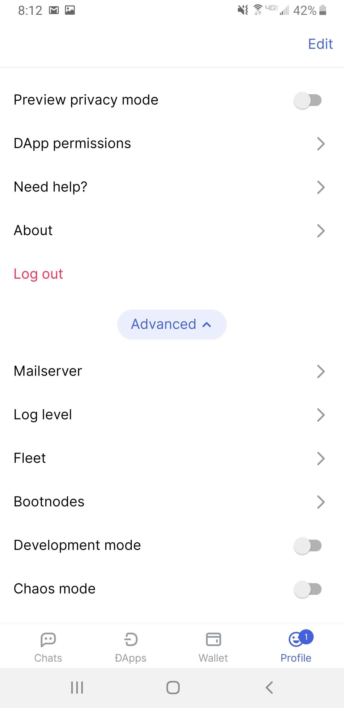
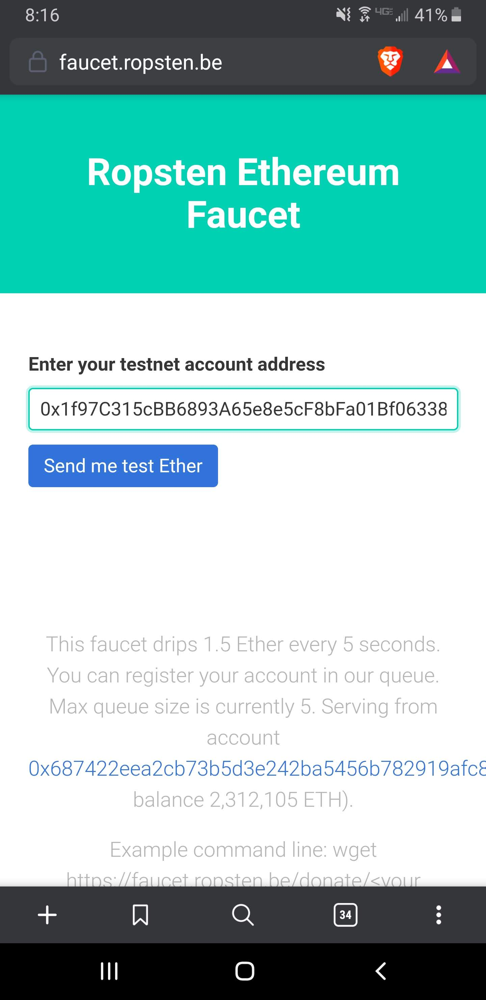

Getting started with Status
And using it to paint in Pixie
There are several mobile Ethereum-enabled browsers (also known as wallets) that you can use to paint in Pixie and to access other Dapps. Here are instructions on how to set up one of them — Status on Android — and how to use Pixie with it.
While each wallet and operating system works slightly differently, the same general steps can be used to get started with other wallets and on other operating systems.
Pixie has been tested on a variety of browsers on desktops but has only been tested with Status on Android and with Metamask on Android. If you're using an iOS device or another wallet on Android, Pixie might not work as expected.
The steps:
- Install Status
- Create an account
- Switch to the Ropsten testnet
- Obtain some Ropsten ETH
- Paint in Pixie
Install Status
Your first step is to visit status.im/get on your device and tap on the "Android App" link.
This will take you to the Play Store page for Status. Because Status is still in beta, you might be prompted to accept a beta tester agreement before the Play Store will display the "Install" button. Once you do, tap "Install".
Create an account
Once you've installed Status, open the app, and you'll be greated with a landing page prompting to you create an account.
Choose a password for your account. You'll enter this password every time you confirm an Ethereum transaction, which, in Pixie, will be each time you want to paint a cell.
Re-enter your password.
Choose a name for your Status account. Status autogenerates a name for you, so this step is optional.
Acknowlege that you understand the risks of using the beta version of Status.
What do these risks have to do with Pixie? The color of each Pixie cell is stored on the Ethereum network and each transaction sent to the network requires a small amount of cryptocurrency known as ETH to compensate owners of the computers that power network. Bugs in Status could affect your access to your account and its cryptocurrency. Note that because Pixie is still in a test phase, it is deployed to a test version of the Ethereum network where the ETH has no monetary value. If your account only has testnet ETH it, and you lose access to it, you've lost nothing of any monetary value.
After dismissing the beta acknowledgement prompt you'll be greeted by a welcome page. Tap "Get started".
Along the bottom of the screen are buttons to access Status's three main features and its settings ("Profile"). Those features are:
- Sending private messages to other Status users (the "Chat" button)
- A web browser that has the ability to write to the Ethereum network (the "DApps" button)
- Sending and receving cryptocurrency (the "Wallet" button)
Status will drop you into the "Chat" feature by default.
Switch to the Ropsten testnet
We're going to point Status to the test version of the Ethereum network where Pixie is currently deployed: Ropsten. Click the "Profile" button to switch over to the settings.
Scroll to the bottom and tap "Advanced"
Toggle on "Developer mode". This will cause several new entries to appear in the setttings menu.
Tap "Network" and then "Ropsten with upstream RPC".
Tap the "Connect" button. This will connect you the Ropsten network but will also sign you out of your Status account.
Enter your password to sign back in.
Obtain some Ropsten ETH
Now let's get some Ropsten ETH into your account. Tap "Wallet". You'll be greeted with a landing page. Tap the "Let's get set up" button to continue.
You use your password to prove to Status that you are the owner of your account. For an extra layer of security, Status provides a way for it to prove to you that it is Status and not another application masquerading as Status: 3 words that only you and Status know.
Each time you are asked to confirm a transaction request Status will display these three words. If the words you're shown don't match the ones Status is displaying during this setup step, you should not confirm the transaction.
After dismissing this prompt, you'll be taken to the main page for the wallet. Here you can see your balances of various cryptocurrencies. Tap "Receive".
Your Ethereum account is identified by a long string of characters that begins with "0x". This is known as the account's "address". Long tap on the address to bring up the context menu and copy the address to your clipboard.
Because Ropsten testnet ETH (ETHro) has no value, there are a handful of services, known as "faucets", that give away Ropsten ETH. Open your web browser and visit faucet.ropsten.be and paste your address into the form.
Tap "Send me test Ether" and your Ropsten ETH will be on its way.
After about a minute, you'll have 1.5 ETHro. Head back to the Status wallet, and pull down to refresh the page until you see your new balance.
Paint in Pixie
Now that we're on the correct network and have some ETH, we can start using Pixie. Tap the "DApps" button at the bottom of the screen and type in "sylphdapps.com/pixie" in the address bar.
Tap on the "Paint!" button.
Pixie will request permission from Status to know your Ethereum account's address. Pixie uses your address to populate the "from" field in the transaction requests it will build as you paint. Allow the connection. You'll only need to do this once.
Choose a color from the panel at the bottom of the screen and tap on a cell you want to paint that color.
Now Status will show you a transaction request that, when approved by you and confirmed by the Ethereum network, will paint the cell you selected its new color. You should see a note at the top of the page that you're connected to the Ropsten network, and the "Amount" field should be 0. If either of these are not the case, reject the transaction by clicking the X in the top left corner. If everything looks good, tap "Sign transcation".
Status will display your three security words and prompt you for your password. If the three words match the ones you saw while you were setting up Status, enter your password and tap "Sign transaction".
Your transaction will be sent to the Ropsten Ethereum network and you'll be shown a confirmation message. Click "Done" to dismiss the message and return to Pixie.
Pixie will display its own confirmation message, which you can also dismiss.
The computers that back the Ethereum network will now work to confirm your transaction. This take about 15 seconds when the Roptsen network is under normal load but takes longer when the network is being heavily utilized. While the transaction is pending, your pixel will pulse with your chosen color. When the transaction is finalized, your pixel will be fully recolored.
Now color some more pixels. Happy painting!